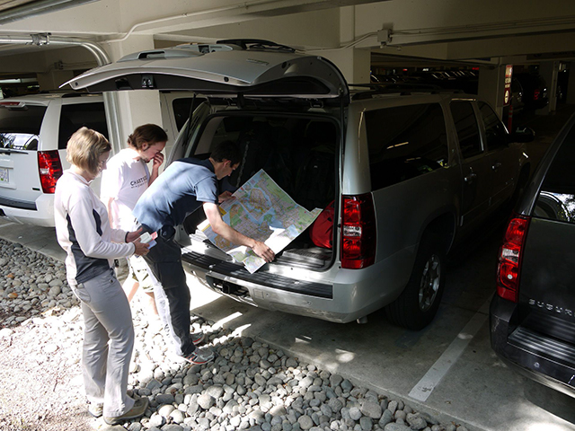
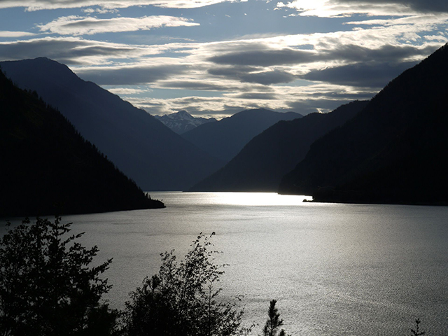
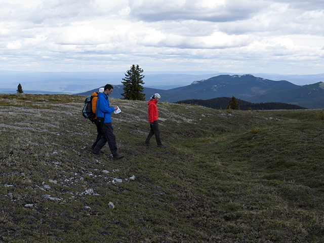
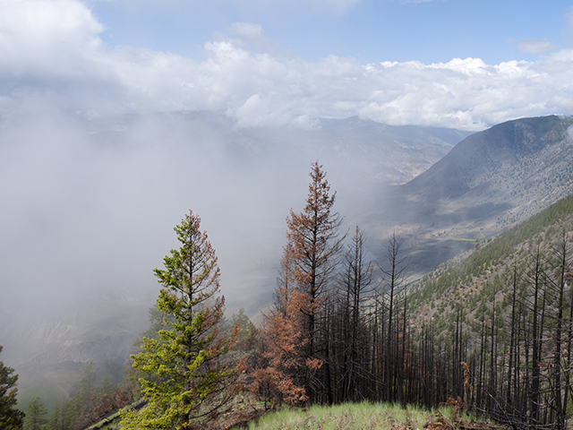
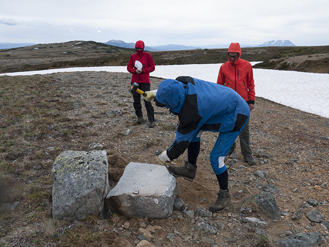
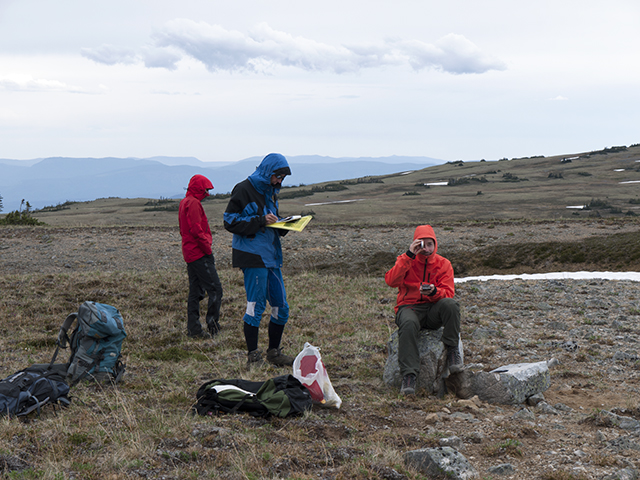
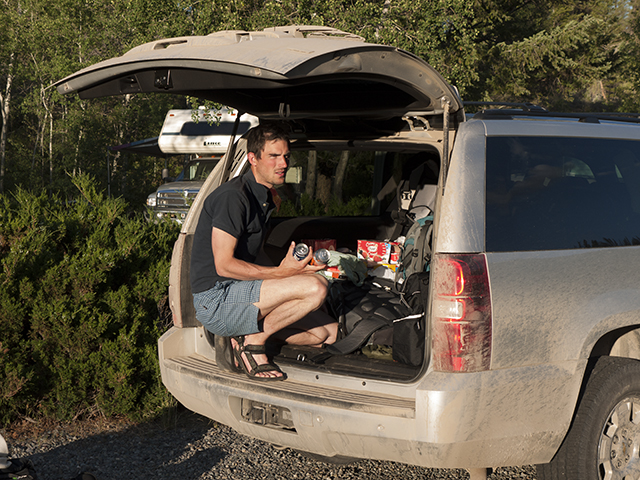
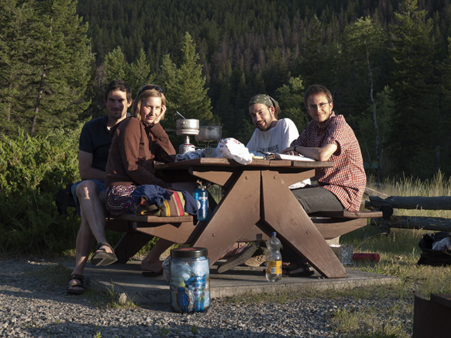

Photos from the British Columbia fieldwork July 2010

Planning where to go

Seton Lake, north of Vancouver

Inspecting a meltwater channel at the Marble Range

Nice fog in the Fraser River valley

Splitting a boulder for sample collection in the Telkwa Range

Taking notes at the split boulder

Martin in the field car

Martin Margold, Barbora Margoldová, Julien Seguinot, Jakob Heyman - the British Columbia fieldwork 2010 group